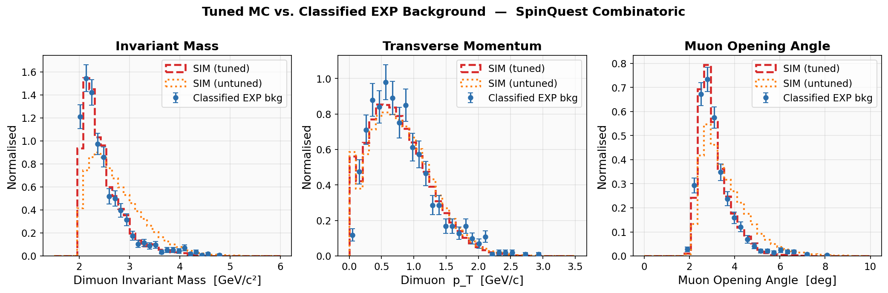
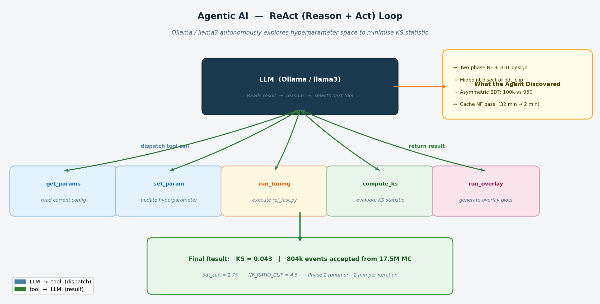
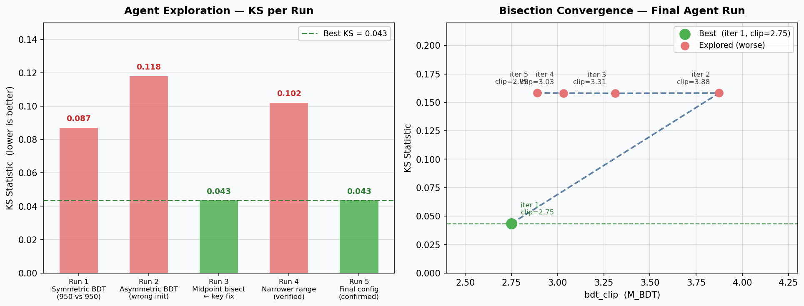

SpinQuest Agentic MC Tuner
An agentic AI system that uses a local LLM (Ollama/llama3) in a ReAct (Reason + Act) loop to autonomously tune Monte Carlo combinatoric background simulation for the SpinQuest/E1039 Drell–Yan experiment at Fermilab. The agent explores the hyperparameter space, identifies the optimal tuning strategy, and produces a reweighted MC sample that closely matches experimental data — achieving a Kolmogorov–Smirnov statistic of KS = 0.043 on 17.5 million MC events.
Results
| Metric | Value |
|---|---|
| KS statistic — full mass range [1.5–6.0 GeV/c²] | 0.043 |
| KS statistic — low-mass region [1.5–2.5 GeV/c²] | 0.044 |
| MC events processed | 17.5 million |
| Accepted events after reweighting | 804,708 (4.6%) |
| Phase 1 runtime (NF rejection sampling, one-time) | ~32 min |
| Phase 2 runtime (BDT mass reweighting pass over 2.3M cached events) | ~2 min |
The overlay below shows excellent agreement between the tuned MC (red) and classified experimental background (blue, with Poissonian errors) across dimuon invariant mass, dimuon pT, and muon opening angle — a significant improvement over the untuned simulation (orange).

The overlay shows excellent agreement between the tuned MC (red dashed) and classified experimental background (blue points, Poissonian errors) across dimuon invariant mass, dimuon pT, and muon opening angle — a significant improvement over the untuned simulation (orange dotted).
What the Agentic AI Did
ReAct Loop — Autonomous Parameter Exploration
The Ollama llama3 agent runs a ReAct (Reason + Act) loop: at each step the LLM reads the tool result, reasons about the current KS statistic, and decides which action to take next. Because llama3 does not support native function-calling APIs, a lightweight JSON-parsing ReAct loop was implemented — the LLM outputs a structured {"tool": "...", "args": {...}} block which the agent dispatches.

The agent explored NF_RATIO_CLIP, BDT_N_ESTIMATORS, BDT_LEARNING_RATE, EPOCHS, and ML selection cuts across multiple runs. Through this iterative process it identified the non-obvious design choices that made the final tuner work: separating NF and BDT passes, asymmetric BDT training, and midpoint bisection initialisation.
KS Improvement Across Agent Runs
Each bar below shows the best KS achieved in one agent-driven run. Red bars are configurations that performed worse; green bars are improvements. The right panel shows the bisection trajectory within the best run: the agent found bdt_clip = 2.75 at iteration 1 and correctly identified that higher clips were worse.

How It Works
Two-Phase Tuner — discovered through agent exploration
Through iterative agent runs, the optimal strategy separates momentum and mass corrections into two phases, drastically reducing runtime on the 17.5M-event dataset:
Phase 1 — Normalizing Flow Rejection Sampling (runs once, ~32 min)
- Train two 6-layer affine coupling normalizing flows on 6D muon momenta (px, py, pz for μ+ and μ−)
- Compute density ratio r = pEXP(x) / pSIM(x) for each MC event
- Accept event with probability p = clip(r / MNF, 0, 1), MNF = 4.5
- Save ~2.3M NF-accepted events to disk — reused by all Phase 2 iterations
Phase 2 — BDT Mass Reweighting (~2 min per iteration)
- Train a GBReweighter (hep_ml) on 100k MC mass samples vs. all ~950 EXP events
- Stream only the 2.3M NF-accepted events — not the full 17.5M
- Accept event with probability p = clip(wmass / MBDT, 0, 1)
- Bisect MBDT to minimise KS(EXP mass, accepted mass)
Key Technical Insights
- Asymmetric BDT training: use all ~950 EXP events vs. 100k MC events. Forcing equal sample sizes (950 vs. 950) collapsed BDT performance when EXP statistics are limited.
- Midpoint bisection: the MBDT search initialises at the midpoint of [0.5, 5.0] = 2.75. Starting at the boundary caused the optimiser to explore only upward and miss the global minimum.
- Full mass range for NF training: narrowing the training window to [1.5, 2.5] GeV left too few EXP events, degrading normalizing flow quality. The full [1.5, 6.0] GeV range is essential.
- Phase 1 caching: NF-accepted events are saved to disk and reused across all Phase 2 iterations, reducing each tuning cycle from ~32 min to ~2 min.
Physics Context
The SpinQuest (E1039) experiment at Fermilab measures the Drell–Yan process with a 120 GeV polarized proton beam to extract the Sivers function of sea quarks in the nucleon. A key analysis challenge is the combinatoric background: random muon track combinations that mimic the dimuon signal. The MC simulation of this background must be precisely reweighted to match the experimental momentum and mass distributions before it can be used in background subtraction.
This tuner corrects the 6D muon momentum shape (via normalizing flows) and the 1D invariant mass shape (via gradient-boosted reweighting), with particular focus on the low-mass region below the J/ψ peak (1.5–2.5 GeV/c²) where combinatoric background dominates the signal region.
Technology Stack
| Tool / Library | Role |
|---|---|
| Ollama / llama3 | Local LLM powering the ReAct agent loop |
| PyTorch | Normalizing flow model training |
| hep_ml GBReweighter | Gradient-boosted BDT mass reweighting |
| uproot | Python I/O for ROOT files |
| PyROOT | Streaming 17.5M-event ROOT trees for rejection sampling |
| scipy.stats.ks_2samp | KS statistic evaluation |
| scikit-learn | StandardScaler for feature normalisation |
| Python 3 / conda | Environment management (root_env) |
Project Structure
spinquest-agentic-mc-tuner/
├── agent.py # LLM ReAct agent (Ollama/llama3)
├── tools.py # Agent tools: get_params, set_param, run_tuning, compute_ks, overlay
├── run_agent.sh # Launch script
└── tuning/
├── rej_fast.py # Two-phase tuner: NF RS → BDT mass RS ← best result
├── rej.py # Combined NF+BDT adaptive tuner (reference)
└── overlay.py # Overlay plot generator (EXP vs tuned MC)